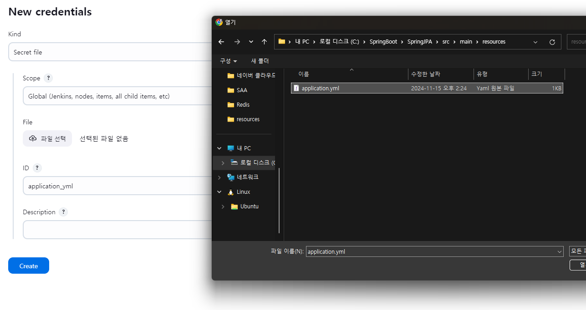
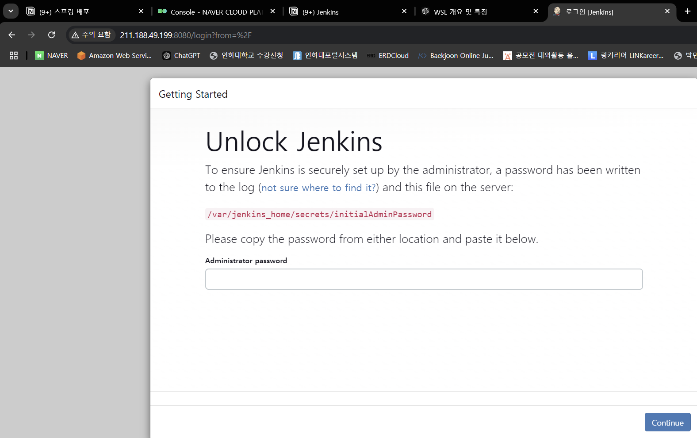
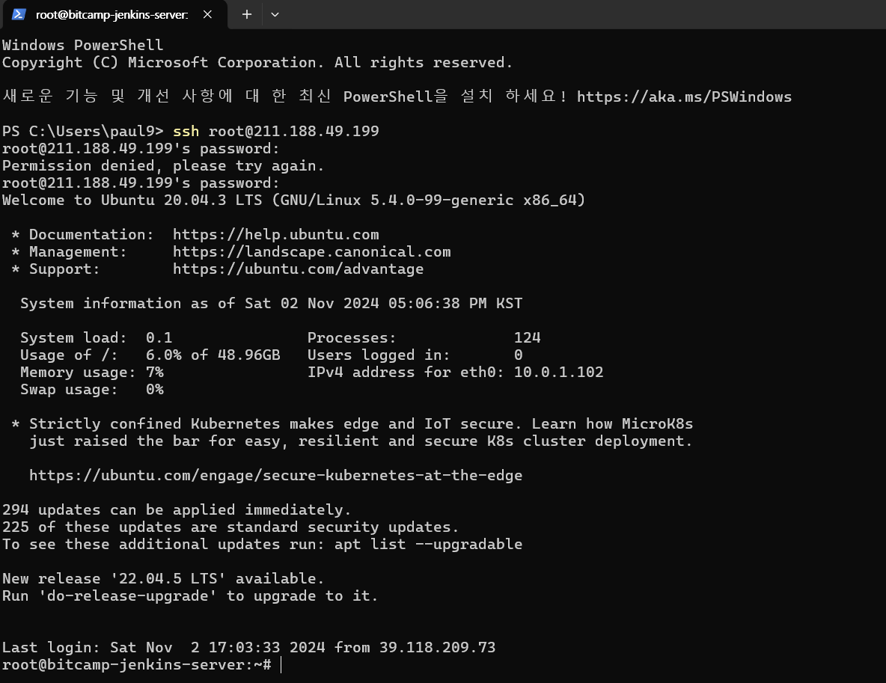
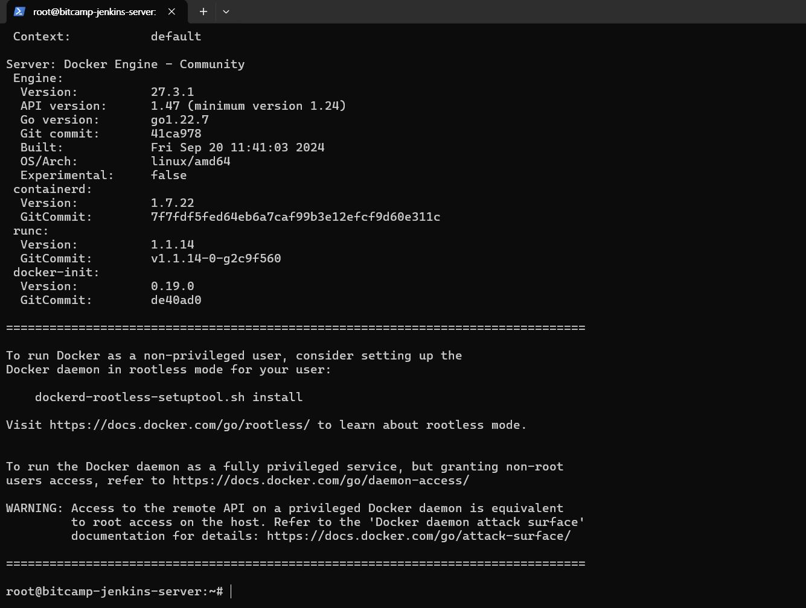
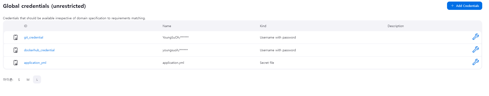
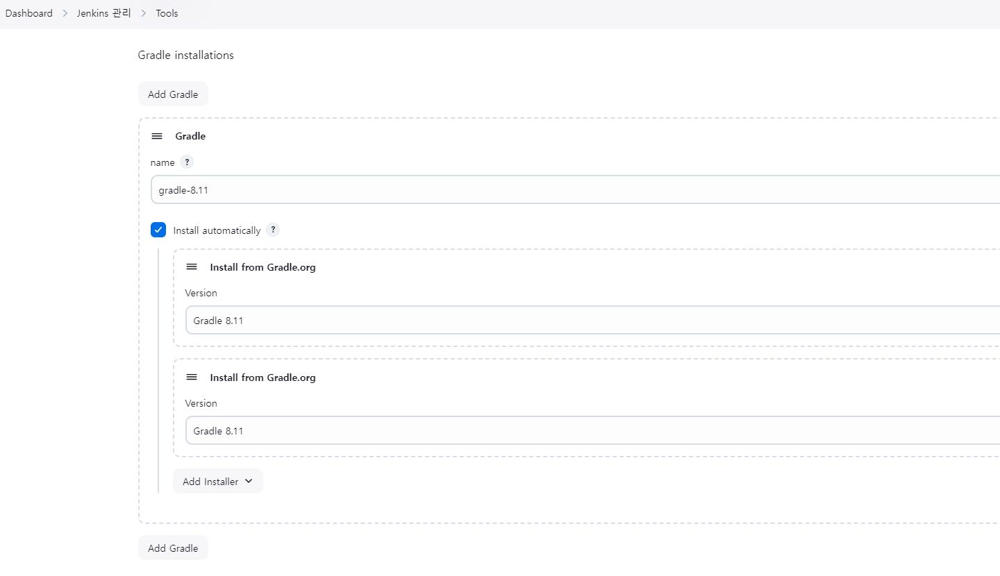
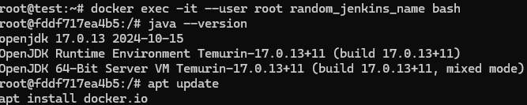
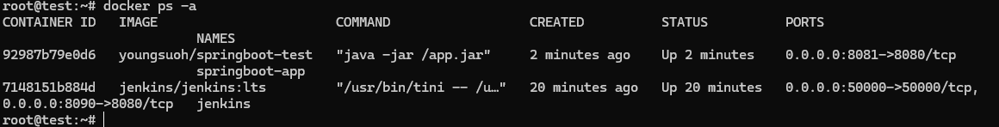
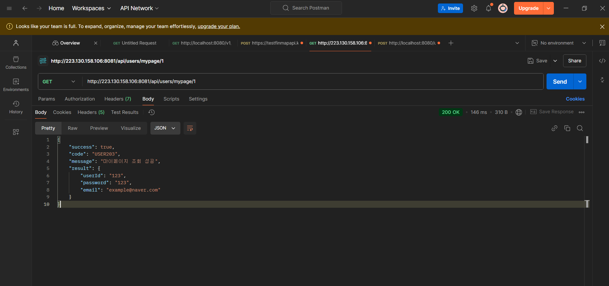

먼저 시작하기 전에 프로젝트 root 경로에 Dockerfile을 생성해준다.
# OpenJDK 17을 기반 이미지로 사용
FROM openjdk:17-jdk-slim
# JAR 파일을 컨테이너로 복사
ARG JAR_FILE=build/libs/SpringJPA-0.0.1-SNAPSHOT.jar
COPY ${JAR_FILE} app.jar
# 애플리케이션 실행
ENTRYPOINT ["java", "-jar", "/app.jar"]
1. 서버를 만들어준다.

2. ssh 접속을 진행한다.

3. 도커를 설치하고 컨테이너를 만들자
curl https://get.docker.com>docker-install.sh
chmod 755 docker-install.sh
./docker-install.sh
- docker 컨테이너를 만들어서 젠킨스를 받아오자
docker run -d \ -p 8090:8080 \ -p 50000:50000 \ --name jenkins \ --user root \ -v /var/run/docker.sock:/var/run/docker.sock \ jenkins/jenkins:lts- 관리자 비밀번호를 바꿔줘야 되겠구만
docker logs {containerNAME} - docker admin 정보 입력 후 로그인
- 관리자 비밀번호를 바꿔줘야 되겠구만
4. 플러그인 설치
- Github Integration
- Docker Pipeline
5. 자격증명(Credential 등록)
- Github Credential
- Dockerhub Credential
- application.yml 등록
총 3개의 자격증명을 등록해준다.

6. Jenkins Gradle 설정
maven 기반 spring과 다르게 spring boot는 gradle 기반으로 의존성을 추가하기 때문에 Tools 인에 gradle 항목에서 다음과 같이 설정해줘야 한다.

추후에 pipeling 을 진행할 때
tools {
gradle 'gradle-8.11' // Jenkins에 설정된 Gradle 이름
}이렇게 설정이 된다.
7. Pipeline 생성
pipeline {
agent any
environment {
GIT_CREDENTIAL = 'git_credential' // GitHub 자격증명 ID
DOCKERHUB_CREDENTIAL = 'dockerhub_credential' // Docker Hub 자격증명 ID
DOCKERHUB_USERNAME = 'youngsuoh' // Docker Hub 사용자명
IMAGE_NAME = 'springboot-test' // Docker 이미지 이름
}
tools {
gradle 'gradle-8.11' // Jenkins에 설정된 Gradle 이름
}
stages {
stage('Checkout Code') {
steps {
git branch: 'main', credentialsId: "${env.GIT_CREDENTIAL}", url: 'https://github.com/YoungSuOh/springboot-test.git'
}
}
stage('Create Directory and Copy application.yml') {
steps {
script {
sh 'mkdir -p src/main/resources'
}
withCredentials([file(credentialsId: 'application_yml', variable: 'APPLICATION_YML_PATH')]) {
sh 'cp $APPLICATION_YML_PATH src/main/resources/application.yml'
}
}
}
stage('Build with Gradle') {
steps {
// gradlew에 실행 권한 추가
sh 'chmod +x ./gradlew'
// Gradle 빌드 명령어
sh './gradlew clean build'
}
}
stage('Build Docker Image') {
steps {
sh 'docker build -t ${DOCKERHUB_USERNAME}/${IMAGE_NAME} .'
}
}
stage('Run Docker Container') {
steps {
script {
// 기존 컨테이너 중지 및 제거
sh 'docker stop springboot-app || true && docker rm springboot-app || true'
// 새 컨테이너 실행
sh 'docker run -d -p 8081:8080 --name springboot-app ${DOCKERHUB_USERNAME}/${IMAGE_NAME}'
}
}
}
stage('Check Application Status') {
steps {
script {
// 애플리케이션이 시작될 시간을 주기 위해 잠시 대기
sh 'sleep 15'
// 애플리케이션 상태 확인
sh 'curl -I http://localhost:8081/api/users/mypage/1 || echo "Application is not running"'
}
}
}
stage('Push Docker Image') {
steps {
withCredentials([usernamePassword(credentialsId: "${env.DOCKERHUB_CREDENTIAL}", usernameVariable: 'USERNAME', passwordVariable: 'PASSWORD')]) {
sh 'echo $PASSWORD | docker login -u $USERNAME --password-stdin'
}
sh 'docker push ${DOCKERHUB_USERNAME}/${IMAGE_NAME}'
}
}
}
post {
success {
echo '배포 성공!'
}
failure {
echo '배포 실패. 로그를 확인해 주세요.'
}
}
}
8. Jenkins jdk 버전 확인 (jdk 17) 및 Jenkins 안에 docker 설치
- 먼저 root 권한으로 Jenkins에 접속해주자
docker exec -it --user root random_jenkins_name bash
- 이후에 자바 버전 17인지 확인해주고
- docker 설치를 진행한다.
apt update apt install docker.io
9. 결과 확인하기


파이프 라인 구조 설명
- Spring Boot 프로젝트의 Dockerfile
- Spring Boot 애플리케이션을 실행하는 Docker 이미지를 만들게 된다.
# 1. Use a base image with JDK FROM openjdk:17-jdk-slim as build # 2. Set the working directory WORKDIR /app # 3. Copy the Spring Boot Jar file (from target) COPY target/springboot-app.jar /app/app.jar # 4. Expose port EXPOSE 8080 # 5. Run the Spring Boot application ENTRYPOINT ["java", "-jar", "/app/app.jar"]- Base Image:
openjdk:17-jdk-slim이미지를 사용하여 JDK 17 환경을 설정합니다. - Working Directory:
/app디렉터리로 작업 디렉터리를 설정합니다. - Copy Jar: Spring Boot 프로젝트에서 빌드된 JAR 파일을 컨테이너로 복사합니다.
- Expose Port: 컨테이너의
8080포트를 외부에 노출합니다. - EntryPoint:
java -jar /app/app.jar명령어로 Spring Boot 애플리케이션을 실행합니다.
spring boot jar파일이 어떻게 만들어지는건가?
- build.gradle
- Gradle은 기본적으로 Java 프로젝트에 대해 필요한 작업을 자동으로 설정해준다.
plugins { id 'java' id 'org.springframework.boot' version '3.3.5' id 'io.spring.dependency-management' version '1.1.6' }id 'java’- 이 플러그인은 Java 애플리케이션을 빌드할 때 사용된다.
- 역할
- Java 컴파일:
src/main/java에 있는 Java 소스 코드를 컴파일하여build/classes/java/main디렉토리에 컴파일된.class파일을 생성합니다. - JAR 파일 생성: 빌드된
.class파일을JAR파일로 패키징할 수 있도록 도와줍니다. 기본적으로build/libs폴더에.jar파일을 생성합니다. - 테스트:
src/test/java에 있는 테스트 파일들을 실행할 수 있도록 설정합니다. 기본적으로test라는 태스크가 제공되어JUnit또는TestNG와 같은 테스트 프레임워크를 사용할 수 있습니다.
- Java 컴파일:
id 'org.springframework.boot' version '3.3.5’- 이 플러그인은 Spring Boot 애플리케이션을 빌드하고 실행할 수 있도록 도와준다.
spring-boot-gradle-plugin을 사용하여 Spring Boot 애플리케이션을 Gradle로 빌드하고 패키징할 수 있게 해준다.- 역할
- Spring Boot 실행 가능한 JAR 파일 생성
- Spring Boot 애플리케이션을 self-contained JAR(실행 가능한 JAR)로 패키징합니다. 이 JAR 파일에는 애플리케이션과 그에 필요한 모든 의존성이 포함됩니다.
- 내장된 Tomcat/Jetty/Undertow 서버 실행
- Spring Boot 애플리케이션을 실행할 때 내장된 서버(Tomcat, Jetty 등)를 사용하여 서버를 설정하고 애플리케이션을 실행
- 배포 및 실행
./gradlew bootRun명령어로 애플리케이션을 실행하거나,./gradlew build로 JAR 파일을 빌드한 후java -jar명령어로 애플리케이션을 실행할 수 있도록 설정
- Spring Boot 실행 가능한 JAR 파일 생성
id 'io.spring.dependency-management' version '1.1.6'- 이 플러그인은 Spring 프로젝트에서 의존성 관리를 효율적으로 처리하도록 도와주는 플러그인이다.
- Gradle에서 의존성 버전을 관리할 때 유용하다.
- 역할
- 의존성 버전 관리
- 호환성 있는 버전 선택
- 의존성의 버전 범위 지정
WAS와 내장 톰켓
WAS(Web Application Server)는 웹 애플리케이션을 호스팅하고 실행하는 서버로, 클라이언트의 요청을 받아서 동적 콘텐츠를 생성하고 응답을 돌려주는 역할을 합니다. 이 서버는 웹 애플리케이션을 실행할 수 있는 환경을 제공하며, HTTP 요청을 처리하고, JSP/Servlet 등의 동적 페이지를 제공하는 역할을 합니다.
Spring Boot에서의 WAS(Web Application Server) 내장 방식
Spring Boot는 기본적으로 **내장 WAS(Web Application Server)**를 사용하여 애플리케이션을 실행합니다. 이는 외부 WAS 서버(예: Tomcat, Jetty, Undertow 등)를 설치할 필요 없이, 애플리케이션에 내장된 서버를 통해 실행할 수 있게 해주는 방식입니다.
1. 내장 WAS 개념
Spring Boot는 애플리케이션을 실행 가능한 JAR 파일로 패키징할 때 내장 WAS(주로 Tomcat, Jetty 또는 Undertow)를 포함하여, 애플리케이션이 실행될 때 내장 서버가 자동으로 실행되도록 합니다.
- 내장 WAS는 별도로 WAS 서버를 설치하고 설정할 필요 없이, Spring Boot 애플리케이션 안에서 서버가 함께 실행되므로 배포 및 관리가 간편합니다.
- 기본적으로 Spring Boot는 Tomcat을 내장 서버로 사용하지만, 다른 서버(Jetty, Undertow 등)로 변경할 수 있습니다.
2. Spring Boot의 내장 WAS
- Tomcat (기본 설정): Spring Boot는 기본적으로 Tomcat을 내장 서버로 사용합니다. Spring Boot가 제공하는
spring-boot-starter-web의존성을 추가하면 Tomcat이 자동으로 내장됩니다. - Jetty 또는 Undertow:
spring-boot-starter-web대신,spring-boot-starter-jetty또는spring-boot-starter-undertow를 사용하여 다른 WAS 서버를 사용할 수도 있습니다.
3. WAS와 네트워크 연결
WAS는 네트워크 소켓을 사용하여 클라이언트와 연결됩니다. HTTP 요청은 클라이언트가 특정 포트로 보내고, WAS는 이 요청을 받아서 적절한 처리 후 HTTP 응답을 클라이언트에게 전달합니다.
- 서버가 네트워크를 통해 요청을 받는 과정:
- 클라이언트: 웹 브라우저 또는 다른 HTTP 클라이언트가 웹 서버로 HTTP 요청을 보냅니다. 이 요청은 URL, HTTP 메소드(예: GET, POST), 헤더 등으로 구성됩니다.
- WAS: WAS는 클라이언트의 HTTP 요청을 받으면, 이를 처리할 준비를 하고, 해당 요청을 Spring 애플리케이션의 컨트롤러로 전달합니다.
- 컨트롤러: Spring에서는
@RestController또는@Controller에서 요청을 처리하고, 적절한 응답을 반환합니다. - 응답: 처리된 결과는 HTML, JSON 등의 형식으로 클라이언트에게 응답됩니다.
4. 내장 WAS 실행 흐름
- 애플리케이션 시작:
java -jar your-app.jar로 Spring Boot 애플리케이션을 실행하면, 내장 WAS(예: Tomcat)가 자동으로 시작됩니다. - 포트 바인딩:
server.port설정(기본 8080 포트)에 따라 WAS는 지정된 포트에서 HTTP 요청을 수신합니다. - 요청 처리: 클라이언트로부터 HTTP 요청을 받으면, WAS는 이를 Spring 애플리케이션의 적절한 컨트롤러로 전달하고, 컨트롤러가 요청을 처리한 후 응답을 생성하여 클라이언트에게 반환합니다.
5. Spring Boot에서의 네트워크 연결
Spring Boot는 네트워크 연결을 처리하는 과정에서 내장 WAS를 사용하고, 이 WAS는 클라이언트의 요청을 받아서 처리하고 응답을 전달합니다. 네트워크 연결의 과정은 다음과 같습니다:
- 클라이언트 요청: 클라이언트는 웹 애플리케이션에 HTTP 요청을 보냅니다.
- 서버 수신: 내장 WAS(Tomcat, Jetty 등)는 지정된 포트(예: 8080)에서 HTTP 요청을 수신합니다.
- 컨트롤러로 전달: WAS는 요청을 Spring 애플리케이션의 컨트롤러에 전달하고, 컨트롤러는 해당 요청을 처리합니다.
- 응답 반환: 처리된 결과는 WAS를 통해 클라이언트에게 HTTP 응답으로 반환됩니다.
6. 내장 WAS의 장점
- 간편한 설정: 외부 WAS 서버를 따로 설정할 필요 없이 Spring Boot 애플리케이션 자체에서 실행됩니다.
- 자동화된 배포: 실행 가능한 JAR 파일 하나로 애플리케이션을 배포할 수 있으며, 애플리케이션과 서버가 함께 패키징됩니다.
- 경량화: 서버를 내장하여 별도의 설치나 설정이 필요 없으므로, 관리가 용이하고 빠르게 배포할 수 있습니다.
7. WAS와 네트워크 연결 구조
WAS는 소켓 프로그래밍을 사용하여 네트워크 요청을 처리합니다. 기본적으로 HTTP 프로토콜을 사용하여 요청과 응답을 주고받습니다. 이를 통해 클라이언트와 서버 간의 연결을 관리하고, 클라이언트의 요청을 처리하는 흐름은 다음과 같습니다:
- 클라이언트 → HTTP 요청 → WAS → 요청 처리 → 컨트롤러 → 응답 생성 → WAS → HTTP 응답 → 클라이언트
결론
- *WAS(Web Application Server)**는 Spring Boot에서 내장되어, 애플리케이션을 실행하는 데 필요한 웹 서버 역할을 합니다.
- 내장 WAS는 Tomcat, Jetty, Undertow 등을 포함할 수 있으며, 이를 통해 외부 서버 설치 없이 Spring Boot 애플리케이션을 독립적으로 실행할 수 있습니다.
- 네트워크 연결은 WAS가 HTTP 요청을 처리하고, 이를 Spring 애플리케이션의 컨트롤러로 전달하는 방식으로 이루어집니다.
WAS도 하나의 프로세스인가?
네, 맞습니다. WAS는 서버 소프트웨어이고, 하나의 프로세스로 운영체제에서 실행됩니다. 즉, WAS는 Java 가상 머신(JVM) 내에서 실행되는 프로세스로, 애플리케이션의 요청을 처리하고, 애플리케이션 로직을 실행하는 역할을 합니다.
WAS의 프로세스 및 멀티스레딩
WAS는 하나의 프로세스로 실행되지만, 멀티스레딩을 사용하여 여러 클라이언트의 요청을 동시에 처리합니다. 일반적으로 WAS는 여러 스레드를 사용하여 동시에 다수의 클라이언트 요청을 처리하는데, 이는 동시성을 처리하는 방식입니다.
- 스레드풀: WAS는 내부적으로 스레드풀을 사용하여, 각 클라이언트의 요청에 대해 적절한 스레드를 할당합니다. 각 요청은 별도의 스레드에서 처리되며, 이를 통해 다수의 요청을 동시에 처리할 수 있습니다.
WAS와 세션 정보
세션 정보는 WAS 내부에서 관리됩니다. 사용자가 처음 요청을 보내면, WAS는 세션 객체를 생성하고, 그 객체에 사용자의 상태나 데이터를 저장합니다. 세션은 서버 메모리에 저장되거나, 쿠키나 세션 ID와 함께 클라이언트 측에 저장될 수 있습니다.
- In-memory: 세션 정보는 WAS의 메모리 내에서 관리됩니다. 이를 통해 빠르게 세션 데이터를 읽고 쓸 수 있지만, 서버가 재시작되면 세션 정보가 사라집니다.
- 세션 클러스터링: 여러 대의 WAS가 클러스터로 구성된 경우, 세션 정보를 공유하고 관리할 수 있는 방식이 필요합니다. 이를 통해 세션 데이터가 여러 WAS 노드에 분산 저장될 수 있습니다.
- 데이터베이스: 세션 정보를 데이터베이스에 저장하고 관리하는 방법도 있습니다. 이 경우, 서버가 재시작되거나 장애가 발생해도 세션 데이터는 지속적으로 보존됩니다.
내장 WAS와 외부 WAS 차이점
내장 WAS는 Spring Boot와 같은 애플리케이션에서 사용하는 내장형 WAS입니다. 내장 WAS는 애플리케이션과 함께 실행되며, 별도의 설치나 설정 없이 애플리케이션 안에서 WAS를 포함한 형태로 실행됩니다. Spring Boot에서는 Tomcat, Jetty, Undertow와 같은 WAS를 내장할 수 있습니다.
반면, 외부 WAS는 독립적인 서버 프로세스로 실행되며, 애플리케이션을 배포하여 실행하는 방식입니다. 대표적인 외부 WAS로는 Tomcat, WildFly, GlassFish 등이 있습니다.
그러면 springboot가 실행되면 톰켓도 하나의 프로세스로서 내부 저장소인 스택이 할당되는 건가?
Spring Boot 애플리케이션이 실행되면 내장 톰캣(Tomcat)은 하나의 프로세스로 실행됩니다. 톰캣은 애플리케이션이 요청을 처리하고, 세션 정보를 저장하며, 클라이언트와의 통신을 담당하는 내장 웹 서버입니다. 톰캣은 실제로 JVM(Java Virtual Machine) 내에서 실행되는 프로세스이므로 스택 메모리도 할당됩니다.
내장 톰캣 프로세스와 메모리 구조
- 톰캣 프로세스 실행:
- Spring Boot 애플리케이션을 실행하면, 내장 톰캣 서버가 자동으로 시작됩니다. 톰캣 서버는 JVM에서 실행되는 하나의 프로세스입니다.
- 톰캣은 내장 웹 서버로서 애플리케이션의 HTTP 요청을 처리하고, 웹 애플리케이션의 서블릿을 실행하며, 세션 관리를 수행합니다.
- 스택 메모리 할당:
- JVM이 시작되면, 스택 메모리가 각 스레드에 할당됩니다. 톰캣은 멀티스레드 서버이므로 각 요청을 처리하는 스레드에 대해 개별 스택 메모리가 할당됩니다.
- 톰캣의 스레드 풀에서 각 스레드는 HTTP 요청을 처리하고, 이를 통해 서블릿을 실행하거나, 애플리케이션의 컨트롤러와 상호작용합니다.
- 톰캣의 메모리 구조:
- 힙(Heap) 메모리: JVM 힙 메모리는 객체를 저장하는 영역으로, 톰캣의 웹 애플리케이션이 사용하는 객체들이 이곳에 저장됩니다. 예를 들어, 서블릿 인스턴스, 세션 정보, 애플리케이션의 비즈니스 로직에 사용되는 객체들이 힙 메모리에 저장됩니다.
- 스택(Stack) 메모리: 각 스레드가 할당받는 스택 메모리는 메서드 호출과 로컬 변수 등의 데이터를 처리하는 데 사용됩니다. 톰캣에서 요청을 처리하는 각 스레드는 자신만의 스택 메모리 공간을 가집니다.
- 메타스페이스(Metaspace): JVM에서 클래스 메타데이터를 저장하는 영역입니다. 톰캣에서 실행되는 서블릿, 클래스 로딩 등이 메타스페이스에 저장됩니다.
- 톰캣의 역할:
- 톰캣은 웹 서버로서 HTTP 요청을 처리하고, 요청에 해당하는 서블릿이나 Spring Controller를 실행합니다. 이를 통해 웹 애플리케이션의 동적 콘텐츠(예: JSP 페이지, REST API) 등을 처리합니다.
- 또한, 세션 관리와 같은 상태 유지 기능도 제공합니다. 톰캣은 세션 정보를 메모리에 저장하거나, 디스크나 데이터베이스에 저장하여 클라이언트의 상태를 관리합니다.
스레드 풀이란?
스레드는 프로세스 내에서 실행되는 작업의 단위입니다. 프로그램에서 여러 작업을 동시에 처리하려면 여러 스레드를 사용하여 병렬로 처리할 수 있습니다. 예를 들어, 웹 애플리케이션이 여러 요청을 동시에 처리할 때 각 요청을 별도의 스레드가 처리할 수 있습니다.
2. 스레드 풀(Thread Pool) 개념
스레드 풀은 미리 일정 수의 스레드를 생성해 두고, 들어오는 작업들을 그 스레드들에 할당하는 방식입니다. 작업이 들어올 때마다 새 스레드를 생성하는 것이 아니라, 미리 만들어둔 스레드 중 하나를 할당하는 방식이기 때문에 자원 관리가 효율적이고, 성능 향상을 도울 수 있습니다.
스레드 풀의 주요 특징
- 작업 큐: 스레드 풀에 작업이 들어오면, 먼저 작업 큐에 저장되고, 여유 있는 스레드가 이를 처리합니다.
- 스레드 재사용: 작업이 끝난 후, 사용된 스레드는 다시 대기 상태로 돌아가서 다음 작업을 처리할 준비를 합니다. 새 스레드를 계속 생성하지 않아서 자원을 절약할 수 있습니다.
- 작업 대기: 만약 모든 스레드가 사용 중일 때 새로운 작업이 들어오면, 그 작업은 큐에 대기하게 됩니다. 일정 수의 스레드를 넘으면 대기할 수도 있습니다.
3. 스레드 풀의 장점
- 성능 향상: 매번 스레드를 새로 생성하는 것보다 미리 준비된 스레드를 재사용하는 것이 더 빠르고 효율적입니다.
- 자원 절약: 새 스레드를 계속 생성하는 것보다 일정 수의 스레드를 재사용하는 것이 메모리와 CPU 자원을 절약할 수 있습니다.
- 응답 시간 단축: 작업을 처리할 때마다 새 스레드를 생성하는 대신, 즉시 대기 중인 스레드를 활용하므로 더 빠르게 응답할 수 있습니다.
4. 스레드 풀의 구성 요소
스레드 풀은 일반적으로 다음과 같은 구성 요소로 이루어집니다:
- 작업 큐: 들어온 작업들을 저장하는 대기열입니다. 스레드가 작업을 처리할 때까지 대기합니다.
- 스레드: 작업을 실제로 처리하는 실행 단위입니다.
- 스레드 풀 관리자: 작업 큐와 스레드를 관리하는 컴포넌트로, 스레드를 할당하고, 유휴 스레드를 재사용하도록 관리합니다.
5. Spring에서의 스레드 풀 사용
Spring에서는 TaskExecutor 인터페이스와 ThreadPoolTaskExecutor 클래스를 사용하여 스레드 풀을 설정하고 관리할 수 있습니다. 예를 들어, Spring Boot에서는 비동기 작업을 처리할 때 스레드 풀을 사용합니다.
Spring에서 ThreadPoolTaskExecutor 설정 예시
java
코드 복사
import org.springframework.context.annotation.Bean;
import org.springframework.context.annotation.Configuration;
import org.springframework.scheduling.concurrent.ThreadPoolTaskExecutor;
@Configuration
public class ThreadPoolConfig {
@Bean
public ThreadPoolTaskExecutor taskExecutor() {
ThreadPoolTaskExecutor executor = new ThreadPoolTaskExecutor();
// 풀의 기본 설정
executor.setCorePoolSize(4); // 기본 스레드 수
executor.setMaxPoolSize(8); // 최대 스레드 수
executor.setQueueCapacity(100); // 대기 큐의 크기
executor.setThreadNamePrefix("taskExecutor-"); // 스레드 이름 접두어 설정
executor.initialize(); // 초기화
return executor;
}
}
스레드 풀을 사용하는 예시
java
코드 복사
import org.springframework.beans.factory.annotation.Autowired;
import org.springframework.scheduling.annotation.Async;
import org.springframework.scheduling.concurrent.ThreadPoolTaskExecutor;
import org.springframework.stereotype.Service;
@Service
public class MyService {
@Autowired
private ThreadPoolTaskExecutor taskExecutor;
@Async
public void runAsyncTask() {
taskExecutor.execute(() -> {
// 비동기 작업 처리
System.out.println("Task executed by: " + Thread.currentThread().getName());
});
}
}
위와 같이, @Async 어노테이션을 사용하여 비동기 작업을 처리하고, 스레드 풀을 통해 효율적으로 여러 작업을 동시에 처리할 수 있습니다.
6. 스레드 풀의 중요한 속성들
- Core Pool Size: 항상 유지되는 최소 스레드 수입니다.
- Max Pool Size: 스레드 풀에서 최대로 허용되는 스레드 수입니다.
- Queue Capacity: 처리할 수 없는 작업이 대기하는 큐의 크기입니다.
- Keep Alive Time: 유휴 상태의 스레드를 얼마나 오랫동안 유지할지 결정하는 시간입니다.
7. 스레드 풀과 서버 성능
스레드 풀을 사용하는 주요 이유는 동시성을 증가시키고, 여러 작업을 병렬로 처리하여 서버의 응답 속도를 개선하는 것입니다. 그러나 스레드 풀의 크기가 너무 크면, 시스템의 자원이 과다하게 소비될 수 있으므로 적절한 크기로 설정하는 것이 중요합니다.
- Jenkins 파이프라인에서 Dockerfile 실행
pipeline { agent any // 자격 증명 등 environment { GIT_CREDENTIAL = 'git_credential' // GitHub 자격증명 ID DOCKERHUB_CREDENTIAL = 'dockerhub_credential' // Docker Hub 자격증명 ID DOCKERHUB_USERNAME = 'youngsuoh' // Docker Hub 사용자명 IMAGE_NAME = 'springboot-test' // Docker 이미지 이름 } // gradle 설 tools { gradle 'gradle-8.11' // Jenkins에 설정된 Gradle 이름 } // main 브랜치의 코드를 Jenkins 빌드 서버로 가져 stages { stage('Checkout Code') { steps { git branch: 'main', credentialsId: "${env.GIT_CREDENTIAL}", url: 'https://github.com/YoungSuOh/springboot-test.git' } } stage('Create Directory and Copy application.yml') { steps { script { sh 'mkdir -p src/main/resources' } withCredentials([file(credentialsId: 'application_yml', variable: 'APPLICATION_YML_PATH')]) { sh 'cp $APPLICATION_YML_PATH src/main/resources/application.yml' } } } stage('Build with Gradle') { steps { // gradlew에 실행 권한 추가 sh 'chmod +x ./gradlew' // Gradle 빌드 명령어 => 여기서 jar파일이 생긴다 sh './gradlew clean build' } } // Github에 등록한 Dockerfile 빌드 //docker build 명령어를 사용하여 Dockerfile을 기반으로 Docker 이미지를 생성 stage('Build Docker Image') { steps { sh 'docker build -t ${DOCKERHUB_USERNAME}/${IMAGE_NAME} .' } } // 도커 이미지 실행 stage('Run Docker Container') { steps { script { // 기존 컨테이너 중지 및 제거 sh 'docker stop springboot-app || true && docker rm springboot-app || true' // 새 컨테이너 실행 sh 'docker run -d -p 8081:8080 --name springboot-app ${DOCKERHUB_USERNAME}/${IMAGE_NAME}' } } } stage('Push Docker Image') { steps { withCredentials([usernamePassword(credentialsId: "${env.DOCKERHUB_CREDENTIAL}", usernameVariable: 'USERNAME', passwordVariable: 'PASSWORD')]) { sh 'echo $PASSWORD | docker login -u $USERNAME --password-stdin' } sh 'docker push ${DOCKERHUB_USERNAME}/${IMAGE_NAME}' } } } post { success { echo '배포 성공!' } failure { echo '배포 실패. 로그를 확인해 주세요.' } } }sh './gradlew clean build'여기서 jar 파일이 생긴다.